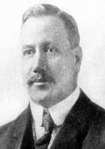

El Voleibol fue inventado por William G. Morgan en 1895, en Holyoke, Massachusetts. Morgan nació en 1870,
en Lockport, Nueva York. Conoció a James Naismith mientras estudiaba en la Universidad de la YMCA de Springfield.
Naismith había inventado el baloncesto recientemente. Fue durante el verano de 1895 cuando Morgan se trasladó a Holyoke.
Allí se convirtió en el director de educación física. Este papel le dio la capacidad de llevar una gran cantidad de prog
ramas y actividades para adultos de sexo masculino. Tuvo mucho éxito en esa posición, ya que la ayuda y orientación que
allí brindaba fue felizmente aceptada.
